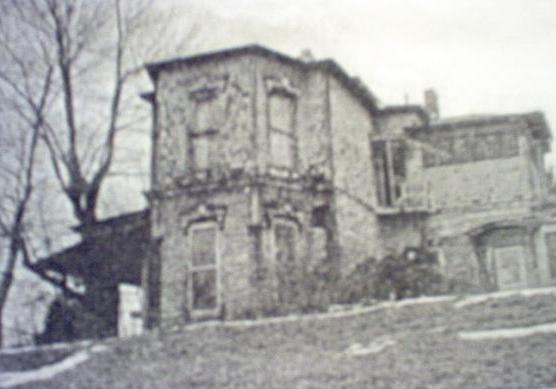

The Wells House

Civil War veteran and mathematician Harvey Wells haunts his historic home on East A Street in Wellston, the village he established in 1876. His book, Wells' New System of Rapid Calculation, had been published in 1867 to lukewarm reception, and Wells became a heavy drinker, obsessively trying to improve upon his problem-solving methods. On October 22, 1896 he leapt from an upper story window and fell to his death. It's sometimes said that he ended his life because of a particularly difficult equation he couldn't solve using his system, but alcohol likely had something to do with it.

The nursing home which used the Wells House in the 20th Century was plagued by visitations from his spirit. Recent restoration efforts seem to have stirred him up even more, and he can sometimes be seen in his old study or pacing the upstairs hall.
The extremely well-informed Robin Snyder filled me in on this Southern Ohio haunted house; my thanks to her for all her research and work.
Back